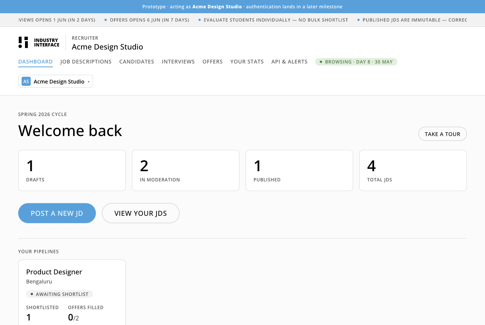
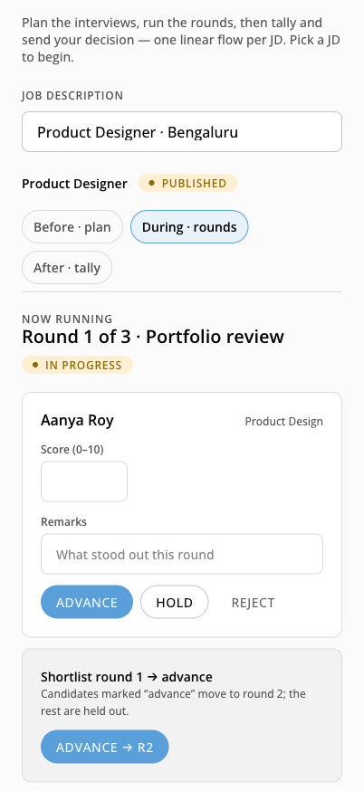
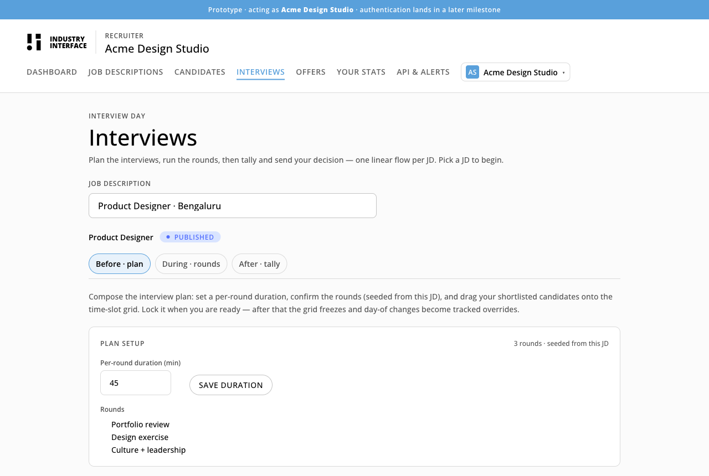
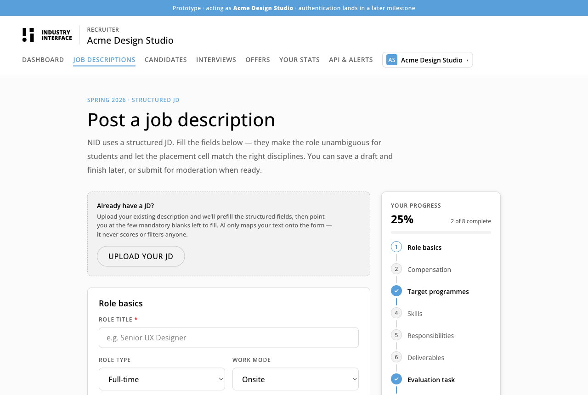
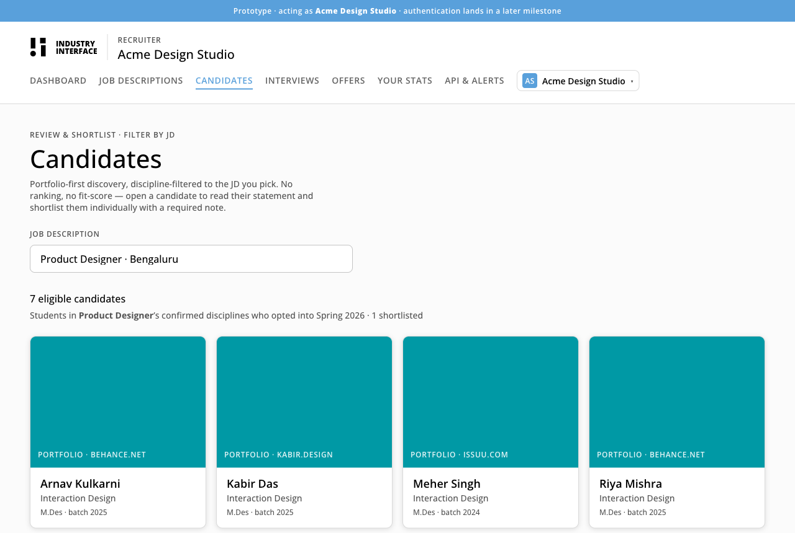
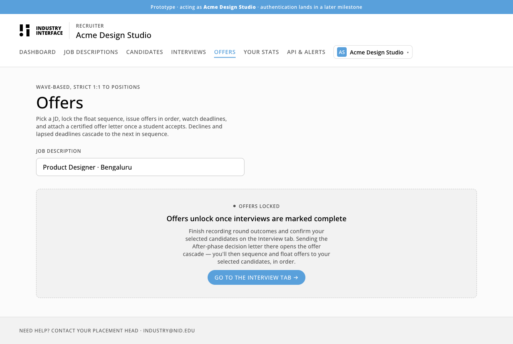

OroLabs × NID · Reimagining the Industry Interface
We rebuilt how companies hire from NID. Without breaking the system it runs on.
A migration-grade recruiter workflow: portfolios that load instantly, hidden frictions made explicit, compliance built in. The institute adopts it module by module.
48-hour task · interactive showcase

The core problem
The Industry Interface looks simple. The recruiter's real journey is not.
From first contact to a signed offer, a company hits frictions the portal never warned them about. Three do the most damage.
The journey
Hidden caveats, revealed too late
Stipend floors, individual-only evaluation, immutable job descriptions, credentials issued by email. A company meets these rules deep in the process, never at sign-up.
The daily job
Portfolios that will not load
Judging a portfolio is the recruiter's core task. The current backend fetches each one separately, so a single discipline view can weigh close to 8 MB. Recruiters give up before the work renders.
The system
No compliance, no way in
The interface predates DPDP 2023 and STQC norms, and there is no path to modernise it without breaking the campus systems wired around it.
Student and recruiter sides were built on one mirrored structure, so the loading failure hits both at once.
We read the real system before drawing a screen.
A public-surface audit of industryinterface.nid.edu and the campus portals. No authenticated probing. What it surfaced shaped every decision that followed.
ASP.NET Web Forms, on a German VPS
Recruiter and student data outside an Indian region.
4 to 5 separate intake systems
A different way in for almost every campus.
~250 KB per portfolio thumbnail
No lazy-load, served over mixed HTTP, fetched one by one.
Onboarding begins as an email
A shared mailbox, then credentials issued by hand.
A cycle date hard-coded in HTML
One was already a year stale. There is no content system.
Two mailboxes, scattered contacts
No single source of truth for who handles what.
How AI co-created it
We did not copy-paste a design. We ran a build pipeline.
The brief asked how I co-pilot the tool. The answer is a four-stage, multi-agent workflow with a human gate at every seam: agents fan out, I integrate and decide.
Recon
Parallel read-agents mapped the live portal and the codebase.
Design
Plan-agents drafted the architecture and flows. I picked the approach.
Build
Dynamic workflows fanned modules out in parallel against frozen contracts.
Verify
Six adversarial agents tried to break every rule before merge.
That last stage paid for itself. It caught three real security holes (a forgeable vacancy cap, a sealed candidate that could be reversed, a re-writable final selection), and each was fixed before merge.
And restraint where it counted: ML, not a large language model.
JD parsing, skill matching, scope-creep detection, and discipline mapping are structured problems. Small ML models, embeddings and classifiers, handle them faster, cheaper, and more predictably than an LLM would. Knowing when not to reach for the heavy model is the real co-pilot skill, and it keeps the system light and fast.
One linear pipeline. Swappable underneath.
A recruiter moves forward through it like a checkout, never sideways into a dead end. Each stage locks as they leave it.
01Dashboard
Every job's pipeline, at a glance.
02Jobs
Post a JD; floor and scope checks run inline.
03Candidates
Filter by job, review portfolios, shortlist with a note.
04Interview
Plan rounds, score them, advance. Each round seals.
05Offers
Float in a locked order, auto-cascade, send the certified letter.
Built to drop in, module by module
Every workflow is its own module behind a stable interface. NID's engineers replace one piece of the old portal and chain a new one into its place, while a boundary checker keeps the modules from tangling. The institute modernises in step with the systems already wired in, never in one risky cutover.
Portfolios in 50 KB, not 8 MB
We ingest the portfolio data once, re-encode the images, and serve them from a CDN in-region. The browse that used to stall now paints on first scroll.
8 MB
before · per discipline view
~50 KB
after · first paint

The same portal, in your hand, on interview day
The interview surface opens as a web-app on a phone. A recruiter scores rounds, sees who is up next, and pings the student coordinator mid-session, no laptop required. One portal, two contexts: desktop for planning, mobile for the room.
AI translates. It never judges.
AI maps recruiter vocabulary to NID disciplines and flags scope creep before a JD publishes. It never ranks, scores, or filters a student. Selection stays human, one candidate at a time, with a written note required.
The critical touchpoints, in high fidelity.
Not mockups. A working build you can click through right now, on desktop or a phone.




Why this design works.
Migration-grade.
It earns adoption because it does not demand a rebuild. Swap one module, keep the rest running.Fast where it is felt.
Portfolios load in 50 KB. The recruiter's core task stops being a wait.Compliant by design.
In-region data, audit logs on every change, DPDP and STQC built into the structure, not bolted on.Human selection, AI assist.
AI translates and flags. People decide, one candidate at a time. No ranking, no bias surface.On brand.
It looks and reads like NID, so a recruiter sees one institution, not a separate product.Mobile when it matters.
Planning on desktop, the interview room on a phone. One portal, two contexts.